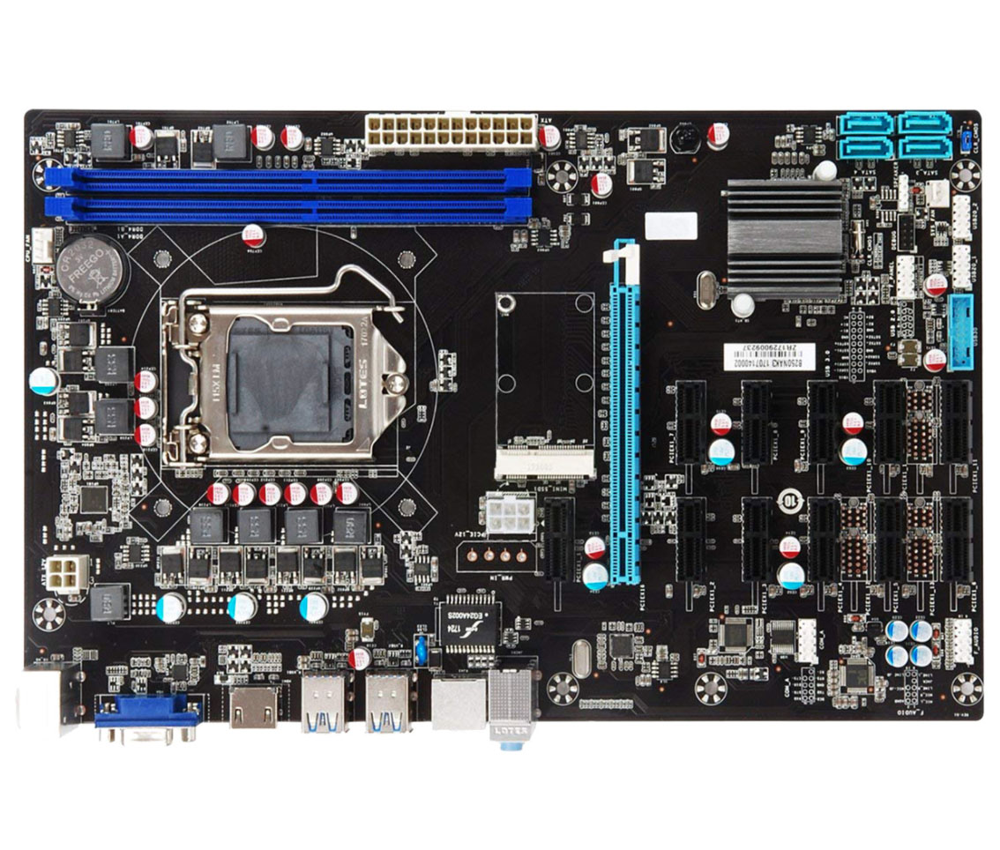

De grootste hardware-interface in een computer is het moederbord. Het moederbord is een printplaat waarop allerlei hardware-onderdelen met, zowel direct als indirect, met elkaar worden verbonden.
Elke computer is opgebouwd uit een processor (CPU) en het interne geheugen (RAM). Tussen de CPU en RAM worden data en instructies uitgewisseld. Deze uitwisseling wordt mogelijk gemaakt door de bus.
Deze bus kan worden opgedeeld in drie verschillende onderdelen:
- de adresbus
- de control bus
- de databus
De adresbus heeft als functie om een bepaalde geheugencel uit in het RAM aan te roepen.
De control bus kan ook weer worden onderverdeeld in twee ‘wires’. De enable wire en de set wire. De enable wire wordt aangezet zodat data vanuit het RAM via de databus naar de CPU kan worden gestuurd. De set wire wordt aangezet wanneer bestaande gegevens in een geheugencel in RAM moeten worden vervangen met nieuwe data.
De databus zorgt ervoor dat data opgeslagen in RAM naar de CPU wordt gestuurd.